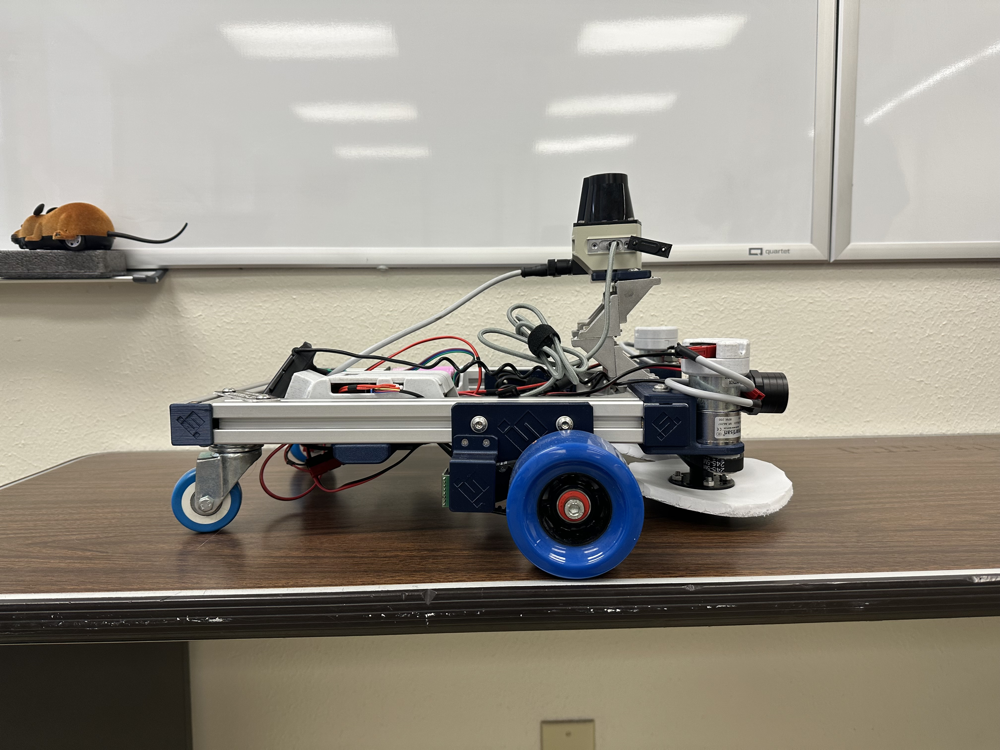
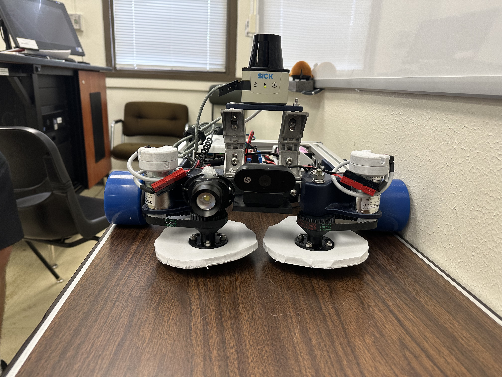

Autonomous mobile robot platform
Mobile robot autonomously patrolling an enclosed space, detecting and pursuing target objects using LIDAR-and-vision sensor fusion, and engaging them with a mechanical capture mechanism. My focus: target tracking and patrol-mode navigation.
- Timeline
- Spring 2025
- Role
- Target tracking; patrol & obstacle-avoidance algorithms
- Stack
- Python · SICK LIDAR · OpenCV · PWM motor control
- Status
- Functional — passed final demonstration
The brief
MXET 300 Mobile Robotics, semester-long team project. Build an autonomous robot that patrols an enclosed space, detects rats, pursues them, and engages with a mechanical capture system — the underlying robotics curriculum being autonomous behavior, sensor fusion, and state-machine-based control. Four-person team.

Sensor fusion: LIDAR for ranging, camera for identification
Neither sensor alone solves the problem. LIDAR gives you accurate distance and motion information but no way to tell a rat from an empty cardboard box. A camera gives you target identification but unreliable range. Together they reinforce each other: LIDAR narrows the search to moving objects within engagement distance, and the camera confirms the target identity by color and shape before the robot commits to pursuit.
On this team I owned the target-tracking pipeline and the patrol/obstacle-avoidance algorithms. The detection chain reads the LIDAR distance scan to find candidates (objects in the right distance band, with motion across consecutive frames), then cross-checks against the OpenCV color-thresholded camera frame to confirm the candidate is the right target before issuing a pursuit command to the motor controllers.

State-machine control
The robot’s overall behavior is structured as a state machine cycling between three modes:
- Patrol — the default state. The robot moves through the room on a coverage pattern, with the LIDAR-driven obstacle avoidance keeping it from collisions and the detection pipeline running continuously in the background.
- Pursuit — triggered when a candidate target is confirmed by both sensors. Drive controller switches from coverage to direct-engagement geometry: head toward the target with continuous range updates from LIDAR.
- Capture — triggered when the target is within engagement distance. Activates the front capture mechanism (driven by separate motors) while the drive controller holds the robot stationary.
Transitions between states are gated by sensor thresholds calibrated during testing — most of the late-project work was tuning these thresholds in a controlled test environment to find the right balance between false-positive engagements (chasing anything that moved) and false-negative misses (ignoring a target because its signature didn’t quite cross the threshold).
The team
Four-person team. Teammates owned the pursuit/engagement algorithms, the obstacle- avoidance LIDAR processing, and the mechanical design of the capture mechanism. My contribution was the target-tracking pipeline and the patrol-mode navigation logic.